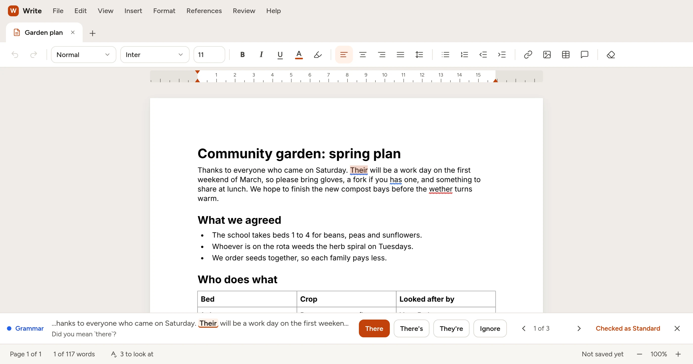

Checks as you type
Spelling, grammar and missing words are underlined as you write. Go through them one at a time in the bar at the bottom, in context, and fix each with one click.
Xenify Write
Write letters, reports and essays with a spelling and grammar checker that runs on your own computer. Nothing you type is sent anywhere. It's free, with no account and no adverts.
Works in Chrome, Edge, Firefox and Safari. Once it has loaded, it works offline too.

Spelling, grammar and missing words are underlined as you write. Go through them one at a time in the bar at the bottom, in context, and fix each with one click.
The checker is a small model that runs on your computer or in your browser tab. Your documents never leave your device.
Open and save .docx, Markdown, HTML and plain text. Export to PDF when you're ready to share or print.
Drag table columns, add rows with a click, float pictures beside your text and add captions.
Add citations, import sources from BibTeX or RIS, and build a bibliography in the style you need. Footnotes, endnotes and a table of contents are built in.
Type maths the way you would on a calculator, like x^2 + 1/2, and it's laid out properly on the page.
Leave notes in the margin, track changes, and accept or reject them one by one.
Save any document as a template with fill-in boxes, and start new documents from it. Mail merge fills in letters from a list.
Light and dark themes, a reading view, full keyboard use, screen reader support and a reduce-motion setting.
The desktop app has everything the browser version has, plus printing, your system fonts and an optional assistant you connect with your own key.
Windows 10 and 11, 64-bit.
Download installer (.exe)Windows may say Windows protected your PC
because the app isn't signed with a paid certificate. Click More info, then Run anyway.
64-bit (x86-64).
All versions and release notes are on the releases page.